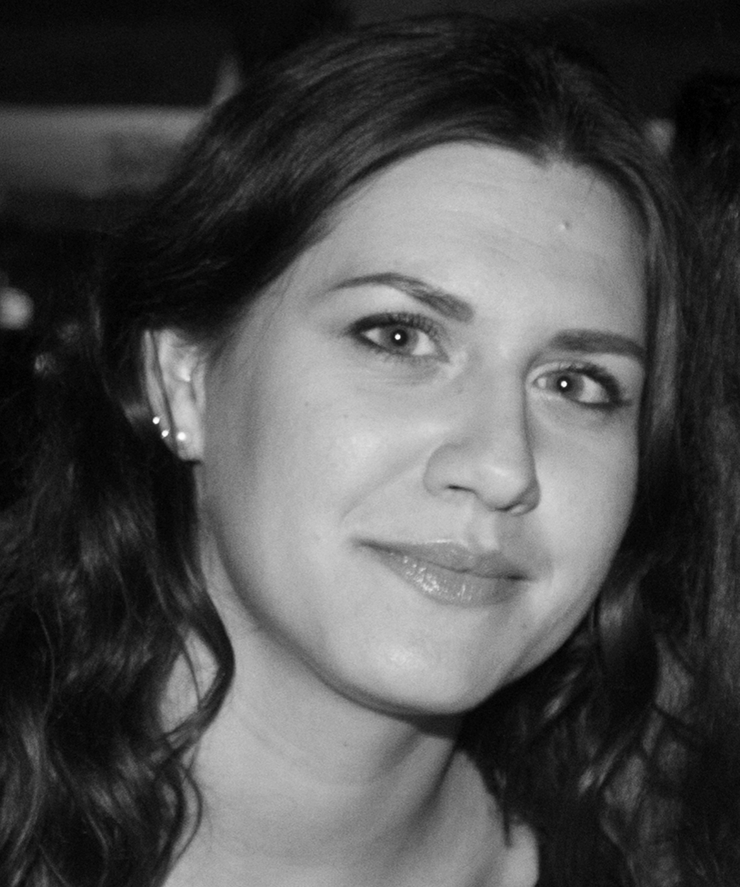
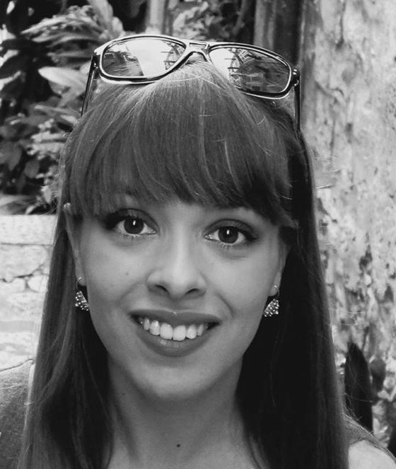
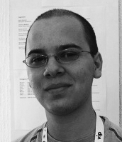
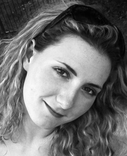
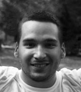
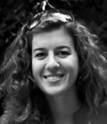
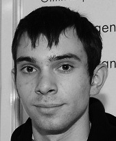
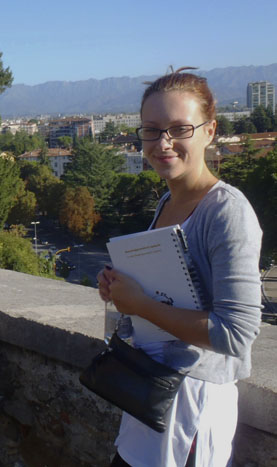
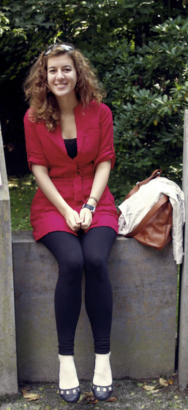
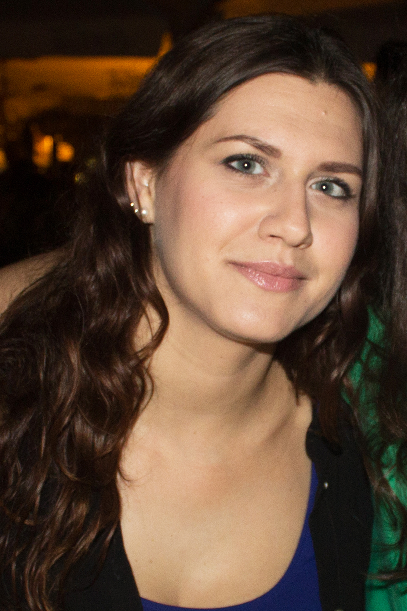

Organizers
CURRENT ORGANIZERS:

Sebastijan Dumancic |

Petra Krznar |

Jelena Tica |

Matilda Males |
FORMER ORGANIZERS:
| 
Branko Durdevic |

Fran Supek |

Andjela Saric |

Matija Piskorec |
|
Anamarija Stafa |
Tomislav Kokotovic |
Nenad Katanic |
Branimir Lukic |
Drazen Lucanin |
Ivan Sudic |
Nino Antulov-Fantulin |
Korado Korlevic |

Petra Pusic |
Sebastijan Dumancic |

Neva Margetic |
Petra Krznar |

Marko Kosicek |

Nemanja Jankovic |

Jelena Spanicek |

Antonija Burcul |
Martina Mijuskovic |


FORMER TECHNICAL ASSISTANTS:
| 
Filip Sklebar |

Luka Opasic |

Tonko Jakobovic |
|
KRISTINA MAJSEC
Kristina chose a career in science in order to fulfill a childhood dream - to contribute something important to the world. She developed an interest in math and chemistry very early, which led her to win the state chemistry championship in 2001. To further pursue this love for science of living systems, she decided to study molecular biology at the University of Zagreb. During her studies, she was interested in various problems. Among others, she has worked on characterizing potential chemotherapeutics for cervical cancer cells and abiotic plant stress response, while her work on archeal tRNA was honored with Rector's award in 2008. Currently she is a doctoral student of biology at the University of Zagreb, working on phytoremediation: creating plants that clean the soil from toxic metals.
As she learned about the amazing world of science, Kristina wanted to share it with others. She first came to the Summer School of Science in 2008, as a Swapshop leader, upon encouragement of her friend Petra Pusic. People at the School, all devoted to science and education, made her feel like she found the place where she belongs. It was the place with great atmosphere of optimism and progress, where her passion for knowledge and striving for excellence were best understood. This is why the Summer School of Science became her new home and she kept coming back as a lecturer and a project leader.
Kristina is also very interested in languages and is currently studying French and Spanish. She is amazed with mathematical regularity of language constructions and how people express the same emotions, needs and attitudes differently in different languages; how we are all so alike and so different at the same time. Because of her fascination with the impact of written word, she wrote for a biology student magazine In Vivo, and is presently exploring her interest in creative writing.
MATIJA PISKOREC
Matija became interested in science after reading James Gleick‘s "Chaos: Making a New Science", while he was a high school student in Bjelovar (Croatia). He decided to implement the formulas for creating beautiful fractal pictures in Pascal programming language and wrote the program in his notebook during lectures. After doing a seminar on nondeterministic chaos for his high school thesis he decided that computer science is a thing for him.
He was introduced to the Summer School of Science in 2008 by Nino Antulov-Fantulin - one of the organizers at the time. The same year he came to the School to lead a computer science project on complex networks. He loved the idea that high school students, university students and senior scientists come together to learn from each other and have fun. He returned to the School the next year to lead a workshop on camera obscura and analog photography.
Matija graduated in computer science on the University of Zagreb in 2010. He is currently working as project associate at the Rudjer Boskovic Institute. His main research interests are in the field of machine learning and complex systems because they employ computer science methods to explore very different phenomena from nature and society. During his studies he was a member of photo club in KSET (Club of Students of Electrical Engineering) with digital image manipulation and analog black and white photography being his main preoccupation. His old analog photographs can be found on http://galerija.kset.org and new digital ones here.
DRAZEN LUCANIN

Having been raised by science professors, Dražen couldn't help picking up an interest in science somewhere along the road. Ever since he could remember there was a computer lying around, so computer science sparked his interest the most. All this led to graduating computer science at the University of Zagreb and doing various programming projects dealing with a wide array of topics - from artificial intelligence, face and speech recognition to multimedia entertainment applications and distributed computing solutions. Drazen is currently working on his PhD on the topic of energy efficient cloud computing, employed as a research assistant at the Vienna University of Technology. His professional web page contains further details.
After he heard about the Summer School of Science, Drazen liked the idea straight away, gladly accepting Matija Piskorec's invitation to lead a project in 2010. He hung around ever since. School's concept of putting together enthusiastic participants and mentors to voluntarily work on projects they choose themselves is fantastic! In such an encouraging atmosphere of like-minded individuals and picturesque Istrian landscape great ideas simply spur from trees and nothing seems too difficult to accomplish.
In his free time, Drazen loves to pursue his other passions and activities. He plays the electric and acoustic guitar and has played in metal, rock and blues bands (Viper, FF bend, Nehaj etc.) He tries to pursue drawing (webcomics and animation). After taking part in various activities of his university student club's (KSET) photography section, he has also developed an interest in photography. Drazen's thoughts about open source hacking can be read in his blog.
IVAN SUDIC

As a child of two mathematicians, Ivan’s fascination with natural sciences was sparked off at a very early age. At first he thought chemistry would be his vocation, but during high school he started to explore the world of physics by preparing for the IYPT (International Young Physicists' Tournament). During high school he spent most of his free time with his teammates working on experimental setups and solutions to scientific problems, which culminated in winning the first place in 2006. Physics fascinated him because it is a tool for improving the world, since physics holds the key to innovating technologies and advancing humanity. He decided to pursue his career as a physicist and is currently finishing his graduate studies at the Department of Physics at the Faculty of Science in Zagreb. His main field of interest is solid state physics. His efforts in that area earned him the Rector’s Award. Lately, he has a growing interest into application of physics in environmental sciences.
Ivan first participated at the Summer School of Science in 2008 as a workshop leader, and again in 2009 as a project leader. Apart from teaching at the School, in 2007 he also co-founded the Youth Research Centre in Zagreb. It is a place where high school students with interest in scientific work can come to get guidance and appropriate equipment.
Ivan is also very much into sports. He has been rowing since he can remember, with success at the international competitions. Regrettably, he had to choose committing to college over professional sports, but he still rows as a captain in college team recreationally. In winter he practices Nordic skiing, and lately tour skiing. He also enjoys hiking and spelunking.
MARKO KOSICEK

In addition to chemistry, Marko’s passion is science communication and popularization. He is actively involved in Zagreb Science Festival (Science Fair) since 2007 as a lecturer and workshop leader. He participated as an invited speaker in other Science Festivals (Novi Sad, Athens, Sinj) as well. In 2008, Marko won Croatian and International FameLab competition (Cheltenham, UK), a competition in 3 minute oral presentations on scientific topics without any slides. His winning presentation “Biochemistry of love” attracted media and resulted with more than 40 interviews for national and foreign TVs, newspapers and radio stations. In 2012 he was invited speaker on TEDxMaksimir where he spoke about his activities in science communication.
Marko is also active in education. Since 2005, he prepares young Croatian representatives for International Chemistry Olympiad. He first came to the Summer School of Science in 2007, on suggestion of his friend, Tomislav Kokotovic (former participant and later, mentor). Marko really enjoyed working with talented and motivated high school students. He was fascinated with how much science one can do in an improvised lab without sophisticated equipment, if one has enough enthusiasm. He came back to the School as a mentor in 2008, and as an organizer in the following years (2009 - 2011). Since 2012 he is the member of Summer School of Science Organizing Committee.
BRANIMIR LUKIC
Branimir got interested in science after reading Carl Sagan's "Cosmos" while still attending high-school in Pozega (Croatia). His initial interest in astronomy led him to study physics in Zagreb, followed by a PhD at the Ecole Polytechnique Fédérale de Lausanne (EPFL) in Switzerland. His research focused on mechanical properties of carbon nanotubes and hydrodynamic memory effects in Brownian motion, resulting in several papers in top discipline journals. After his PhD, he did postdoctoral research at French National Institute for Health and Medical Research in Paris.
During graduate school, Branimir was active in the Croatian Society for Public Understanding of Science (znanost.org), where he developed “Connect”, an on-line network of Croatian scientists in Croatia and abroad. His work enabled Croatian scientific community to actively participate in country's science policymaking.
Branimir first came to Visnjan in 1997, as a participant of the Summer School of Astronomy. He fell in love with the spirit of the place, returning regularly to recharge his batteries with enthusiasm and inspiration and to create new friendships. He was involved in the Summer School of Science since its inception in 2001, serving a number of different roles. As a School organizer since 2004, he made a series of crucial contributions to the development of the School, including conceptual design of the scientific program. He now serves as a member of the Organizing Committee and is working on School’s long term development.
Since September 2010, Branimir is employed as a physics teacher in Technical High School in Pozega, Croatia. Concurrently with work, he is studying theory of instruction at the University of Zagreb and preparing for the teacher's state exam.
MARTINA MIJUSKOVIC
While she was an undergraduate student at the University of Zagreb, Martina was active in the Biology Student Association (BIUS), where together with her colleagues she organized biology journal clubs and a first bioinformatics course at the university. After graduation, she moved to ETH Zurich (Switzerland) to do her Ph.D. Her work focused on a general transcription factor TFIID, a large protein complex necessary for gene transcription.
In 2003, during her graduate studies, Martina was introduced to the Summer School of Science by her friend Branimir Lukic. Excited and inspired by the creative atmosphere at the School, she decided to come back as a project leader and, in 2005, as the school organizer. Together with Branimir Lukic, she enjoyed the creative process of designing the scientific program and laying down the plans for School’s future growth. That included conceptualizing and finally implementing the expansion of Summer School of Science to two camps: S3 and S3++. Since 2009, Martina serves as a member of the Summer School of Science Organizing Committee and is focused on School’s long-term development.
Martina currently lives in Philadelphia, where she works as a postdoctoral researcher at the University of Pennsylvania. She spends her free time in dance studios, exploring her interest in photography and writing a blog. She is also active as a TED translator and hopes to visit the TED conference one day to talk about her work in education.
KORADO KORLEVIC
His scientific interests led him first to an expedition in Tunguska (Russia), where he explored the asteroid impact craters. Motivated by the possibility of asteroid collisions with the Earth, he started asteroid monitoring at the Visnjan Observatory- work that resulted in the discovery of more than 1400 asteroids and two comets that bear his name. Visnjan Observatory is placed among world’s twelve most productive Observatories of all times.
Korado continues to be active in science education and asteroid astronomy. Among his current projects are the creation of new the observatory in a near-by village Tican and the establishment of the new Science and Education Center Visnjan that cooperates internationally through the Network of Youth Excellence. In 2005, he initiated a new national science competition, VIP EUREKA, based on experimental research performed by high-school students. He provided crucial organizing support (fundraising and on-site coordination) for the Summer School of Science since it’s beginning, in 2001. He is still active as a mentor at the Visnjan School of Astronomy.
FRAN SUPEK

Ever since his early childhood, Fran was drawn to the natural world. His curiosity was ignited by walks through nature his grandfather took him to, while telling him stories about the medicinal properties of plants, how songs of different birds sounded, or why moss grew on north side of trees. This interest was rivaled only by the arrival of his first computer, a Commodore 64, and a book that described how to make it do mostly useless but fun things using the BASIC programming language. With his focus shifting between biology and computers, Fran finally decided to study molecular biology. He graduated at the University of Zagreb with a diploma in bioinformatics, a young and exciting discipline at the time.
Fran recently got his PhD degree with a thesis in comparative genomics of bacteria, researching this field at the Rudjer Boskovic Institute in Zagreb, Croatia. In addition to working as the only biologist in an artificial intelligence lab full of computer scientists, Fran also collaborated on various research subjects together with medical doctors, organic chemists and cancer biologists. Fran now works as a Marie Curie postdoc at the Centre de Regulació Genòmica (CRG) in Barcelona, Spain (see full CV).
Believing that scientists are responsible for communicating the significance of their research to the general public, Fran has frequently worked with the local and national newspapers, radio and TV stations to further the goal of popularizing science. In 2007, he won the FameLab Croatia competition in short scientific presentations with a talk about protein folding.
Fran was introduced to the Summer School of Science by his long time colleague and friend, Martina Mijuskovic, who persuaded him to be a project leader in 2007. Realizing how nice it would have been if such a school existed at the time when he was a high school student, he has gladly returned to the School ever since, contributing either as a lecturer, project leader or the School organizer. Even after having been there several times, Fran is still amazed by the enthusiasm for science shared between the students and the group leaders at the Summer School of Science.
ANDELA SARIC

Andela's affair with natural sciences began under the influence of her father, a medical doctor. As a child she was amazed with biology and the human body. Growing up, her interests moved to more fundamental sciences: chemistry and physics. To her, the idea that by performing a chemical reaction in a flask you actually recombine atoms and create completely new organizations was utterly appealing. Chemistry gave her the feeling of unlimited creativity, while physics added the rationality and control. Today, Andela is becoming an expert in chemical physics.
During her stimulating high school education, Andela took part in different national scientific competitions and in the International Chemistry Olympiads, winning a bronze medal. She started her research career in theoretical chemistry still while majoring chemistry at the Faculty of Science, University of Zagreb. This encouraged her to move to New York to do her Ph.D. at Columbia University. Currently, she is working on understanding physics of various soft material systems, including artificial/biological membranes and synthetic/biopolymers.
Seeing teaching as a great way to keep her own motivation and love for science, Andela has worked with a number of young science enthusiasts. She helped preparing the national chemistry olympic team, partook in Zagreb Science Festival, and has worked as a teaching assistant at Columbia University.
Andela first came to Summer School of Science in 2005, as a workshop leader. Like most of the people who visit the school, she fell in love with the atmosphere, informal way of gaining knowledge and the lovely people. She keeps coming back, and has participated in the School as a project leader, lecturer or organizer ever since. Andela sees the School as a great polygon for assisting young minds to find their way and is interested in taking part in the School's development. Her goal is to enable participation to every interested student, regardless of the educational or economical background.
NINO ANTULOV-FANTULIN

At the age of twelve Nino became fascinated by astronomy and joined local astronomy club „Gea-X“ Slavonski Brod (Croatia). Experimental projects he worked on there gave him a chance to learn about the scientific method and to get a closer insight into Universe. Later, as a high school student, he fell in love with computer programming. After writing his first programs (one for data encryption called „Word Crypt“ and another for epidemic simulations called „Burning Virus“), he decided to study computer science.
Nino finished undergraduate and graduate study of computer science at the Faculty of Electrical Engineering and Computing, University of Zagreb. Currently, Nino is working as a research assistant at the Rudjer Boskovic Institute, Croatia. He is also a PhD student in Computer Science at the Faculty of Electrical Engineering and Computing, University of Zagreb. Nino's main research activities are in field of complex networks (epidemic models and simulations), machine learning, data mining and bioinformatics (protein docking).
Nino was a participant at the Summer School of Science in 2004 and 2005, where he got his first opportunity to work on real scientific projects in computer science. He wanted to give chance to others to experience science as he did at the School, so he kept coming back as a workshop leader or a project leader ever since 2006 (including as an organiser in 2008). He could simply not resist the creative atmosphere at Summer School of Science.
Nino likes all kinds of sports, especially martial arts. When the sun is shining, cycling is one of his favorite ways of transportation. Recently he started to play chess in his spare time with his roommates, in their private chess club „Four horses“. Nino also likes to listen old vinyl records on the gramophone.
ANAMARIJA STAFA

Being a teaching assistant on student practicals at University of Zagreb, Anamarija is actively involved in higher education. In 2007 she also held a workshop on yeast at the Summer Science Factory, a summer program for elementary and high school students at the Mediterranean Institute for Life Sciences in Split, Croatia.
She was invited to the Summer School of Science in 2009 by her friend, Fran Supek. At S3++ camp, she led a project that focused on molecular genetics and toxicology. She was impressed by the strong motivation and hard work of her students, as well as the interaction between project leaders and organizers. She decided to return to Visnjan next summer and enthusiastically accepted an invitation to be a co-organiser of S3++ camp in 2010.
TOMISLAV KOKOTOVIC

Tomislav fell in love with chemistry under the influence of his high school chemistry teacher. Doing experiments with beautiful colours and all the other "wonders" performed in test tubes at the time teased his imagination and awoke the thirst to understand puzzles behind those experiments. This motivated him to learn more and take part in several national competitions and at the International Chemistry Olympiad where he won bronze medal. Later, interest in chemistry broadens to molecular and human biology. Interest in both people and scientific way of comprehending the world melted together for several years and resulted with a wish to become a medical doctor.
Currently he is a fifth year student at School of Medicine University of Zagreb. Although educated to become a physician, his interest in basic science grew exponentially with the knowledge gained in pathophysiology of diseases. Wanting to deepen insight in molecular background of different malfunctions of the organism, Tomislav joined research labs dealing with tumour biochemistry and genetics. He also won a Rektor's prize for results on investigation of the Wnt signaling pathway's role in neuroepithelial brain tumour development. The plan for the future is to connect passion in science and medicine by doing bench-to-bedside translational research.
Tomislav was a participant at Summer School of Science in 2004. S3 was to him a unique opportunity to have hands on experience in science and to be thought scientific method by experts of their fields. Great perspective acquired in Višnjan and stimulating high school education shaped his way of thinking about science as a field which combines knowledge and problem solving with creativity. Since learning science gave him the feeling of liberty, Tomislav wanted to transfer this idea further which motivated him to take part in different projects in science communication. In following years he came back to Višnjan to do workshops, then a project and finally to organize S3. He also took an active part in other popular science projects like Science Festival at School of Medicine and a workshop in Science Communication (collaboration of School of Medicine University of Zagreb and Ecole Normale Superiur Paris). Currently he moved to different aspect of science communication and now he is editing scientific section in medical students' journal Medicinar. A goal of this section is accenting importance of bridging basic science and medicine.
Extracurricular education activities like S3 are often designed with great care by enthusiasts and professionals of the field which makes these programs unique tools for developing interests, skills and motivation of each child participating. Removing boundaries of conventional education, hands on experience and visible result of their work make tangible impact on professional and personal development of young people. This is why Tomislav finds S3 and similar programs of crucial importance for development of more functional and humane society.
NENAD KATANIC

Since his very early age it was obvious that Nenad's career will have something to do with computers. As he often likes to point out, he learned his first letters from the old Commodore 64 computer keyboard. Since then he puts most of his efforts in learning and discovering the amazing world of computer science.
Nenad finished his undergraudate and gradute study in the field of Software Engineering at the Faculty of Electrical Engineering and Computing, University of Zagreb, where he also recently started his PhD in Computer Science. He is also employed as a software developer in Ericsson Nikola Tesla company in Zagreb, carrying out research activities in the field of modelling high-complex telecommunication software systems. Besides current research activities within Ericsson Nenad is also involved in other software development projects. One of the important ones was during his graduate studies where he worked on an innovative project of building the advanced software system for wild animal tracking, called Wildlife Observer. This software system will soon become a primary tool for croatian veterinarian scientists involved in the tracking of endangered animal species in Croatia, especially wolves. For this project Nenad was awarded a Rector's award in 2009. A part of this project has been used as a scientific project on Summer School of Science in 2008.
Nenad's first contact with the Summer School of Science was in 2007, after the invitation from Nino Antulov-Fantulin to participate as a project leader. Abilities, motivation and thirst for knowledge of young students at the School made him realize that science and education is the path he wants to take in his life. After that first year he has become actively involved in School's activities. He participated again as a project leader in 2008 and as a school organizer in 2009.
Apart from scientific work, Nenad's love No.#1 is music and traveling. He is actively involved on Croatian punk-rock scene as a bass player in croatian punk-rock band called "Kriva Istina" (Wrong Truth). Until this day, they have played over 60 concerts around Balcan countries and published one album called "Van Okvira" (Out of frames). Through socially and politicaly oriented lyrics, his band is pointing out some of the important issues in the Croatian society.
BRANKO DURDEVIC
Branko has been on the Summer School of Science since 2004, first as s participant. He immediately fell in love with the atmosphere there. What he loved the most was the fact that he finally found a place where he could meet people of similar interests and where he could ask all the questions he always wanted to ask. He has been coming back ever since, either as a technical assistant, project leader or school organizer. The School also went along with his interest in education, especially because he feels that regular schools usually don’t promote critical thinking and creativity so he wants to help change that.
Branko also has a strong interest in music and he likes to sing. He is a member of the Student Section of Croatian Physical Society Choir. Eventually, he would like to go a music school to explore this interest further.
LUKA OPASIC

Luka, a second year student of medicine at the University of Zagreb, has been a participant at the Summer School of Science in 2007, 2008 and 2009. To give back for everything he received in those three years, and to forward it on to a younger generation, he volunteered as a Swapshop leader in 2010, and now as a technical assistant.
On S3++ 2008 Luka was introduced to marine biology, which led him to continue to work in the field of reproductive marine zoology. Currently, he is interested in stem cells and is beginning his work on regeneration of brain after stroke by using neural stem cells.
Other than medicine, which takes up nearly all his time, he plays guitar in Blues Train band, scuba dives during summer and works on developing his creativity through ideas and art.
FILIP SKLEBAR

Filip is a fourth year student at Gimnazija Bjelovar, Croatia. He has been a participant at the Summer School of Science in 2009 and 2010. To give back for everything he received in those two years he volunteered this year as a technical assistant.
On the Summer School of Science 2009 Filip was introduced to plasma physics, which led him to continue to work in the field. He participated on national competitions in physics about Kelvin water dropper, light bulb efficiency and chemistry where he designed device for measuring conductivity of solutions. Currently, he is interested in physical chemistry, electronics and experimental physics.
Since 2008 Filip is a member of photo club in Bjelovar with digital image manipulation and graphic design being his main preoccupation. His photographs can be found here.
PETRA PUSIC
 Petra attributes the decision to become a scientist to her mother, who encouraged and nurtured her curiosity about the world around us. Finishing high school, Petra had troubles to decide what to study as she was able to find something exciting and interesting in almost everything. Molecular biology, maths, psychology and electrical engineering were at the top of her list, but on the day of the decision, when she entered the old building of Biology Department and her name was read, she knew she is at the right place. Studying biology was one of most motivating and interesting periods of Petra's life to date. Petra was a part of a small group of ambitious enthusiasts that were always eager to learn and experience more.
Petra attributes the decision to become a scientist to her mother, who encouraged and nurtured her curiosity about the world around us. Finishing high school, Petra had troubles to decide what to study as she was able to find something exciting and interesting in almost everything. Molecular biology, maths, psychology and electrical engineering were at the top of her list, but on the day of the decision, when she entered the old building of Biology Department and her name was read, she knew she is at the right place. Studying biology was one of most motivating and interesting periods of Petra's life to date. Petra was a part of a small group of ambitious enthusiasts that were always eager to learn and experience more.
During her studies, Petra realized how exciting the world of microbiology can be, so she tried to learn more about it and took courses in this area of research. After doing her bachelor's and master's thesis, as well as several internships in molecular plant microbiology, Petra was employed as a Research Fellow and Teaching Assistant at Department of Microbiology and Parasitology, Medical Faculty in Rijeka. There she investigated interactions of human pathogens, like Legionella spp. with immune system cells, amoeba and other bacteria. Currently she is doing her PhD at Max F. Perutz Laboratories in Vienna, where she is studying molecular mechanisms of regulation of catabolite repression in Pseudomonas aeruginosa, human pathogen that causes serious problems in patients with cystic fibrosis.
Wanting to share her fascination with science with other people, Petra s participated in many science popularization events, like Science Festival, Summer Science Factory and Night of Biology at the University of Zagreb. During her studies in Zagreb, she met Branko Durdevic who introduced her to the Summer School of Science in 2007. Once she experienced the atmosphere there, popularization of science among youngsters become something that is a great source of inspiration and energy that drives her forward from then on. Petra sees the Summer School of Science as an international melting pot of creativity, enthusiasm and brilliant ideas with a flavour of real love and passion for science. Students at the School represent a pluripotent mass of ideas that absorb like a sponge whatever is happening around them. Mentors, trying to give them a different (scientific) insight on the matters of life and to nurture their love for science, in the end become the ones who are taught.
Learning foreign languages, reading books and travelling are also Petra’s great passions. Recently, she realized that sports could do her well. At the moment she is experimenting with soccer, indoor beach volleyball and many more.
SEBASTIJAN DUMANCIC
 Sebastijan has found his interest in science by reading Jules Verne's works, especially 20 000 miles under the sea. Unalbe to build his own Nautilus, he become interested in computer science, since he was raised up by two informaticians. After writing his first programs in Logo, he was convinced it was the right choise for him.
Sebastijan has found his interest in science by reading Jules Verne's works, especially 20 000 miles under the sea. Unalbe to build his own Nautilus, he become interested in computer science, since he was raised up by two informaticians. After writing his first programs in Logo, he was convinced it was the right choise for him.
Sebastijan joined the Summer School of Science in summer of 2012 as project leader, in charge of a project about computer science and recognizing music taste. He was impressed with the motivating atmosphere and passion of young students and educators, so he decided to come back as an organizer. Futhermore, he is also an active member of Young Gifted Mathematicians „Marin Getaldić“ and one of the organizers of Young Mathematicians Summer Camp. After his work in those Schools, he has found that educating is the way for him.
He is currently a master's student at the University of Zagreb. His main research interests are in the field of machine learning and optimization. He is particulary interested in applying machine learning concepts to medical diagnosis problems. One of his main preoccupations is music. He has been playing French horn for 12 years now. For two years, he has been a part of World Wind Youth Orchestra Project in Schladming, Austria.
NEVA MARGETIC
 As a child, Neva was more interested in languages and law then science. However, everything changed during high school as the biology lectures turned to genetics. Mostly thanks to her biology teacher who encouraged her, she got more and more interested and fascinated by the miracle that is life and genetics that stood behind that. Even though she initially wanted to study molecular biology, Neva ended up being accepted to the Physics Department at the University of Zagreb. During her first year of study, she completely fell in love with physics as a science thanks to great professors and teaching assistants who finally showed her that physics isn’t complicated and boring but fun and exciting.
As a child, Neva was more interested in languages and law then science. However, everything changed during high school as the biology lectures turned to genetics. Mostly thanks to her biology teacher who encouraged her, she got more and more interested and fascinated by the miracle that is life and genetics that stood behind that. Even though she initially wanted to study molecular biology, Neva ended up being accepted to the Physics Department at the University of Zagreb. During her first year of study, she completely fell in love with physics as a science thanks to great professors and teaching assistants who finally showed her that physics isn’t complicated and boring but fun and exciting.
When she was in her third year, one of the professors offered Neva to work on an educational project at the Institute of Physics. The project was about bringing magnetism closer to high school students as, even though it's exceptionally interesting, due to complexity magnetism is not so much represented in everyday school physics. Projects resulted with a demonstrational kit for 27 experiments, instructions on how to perform them and a video for each experiment.
Neva was introduced to the Summer School of Science in 2011 when Marko Kosicek invited her and her colleague to participate as magnetism workshop leaders. The energy of the School got under her skin almost instantly as she met all these wonderful people who shared the same passion to bring science closer to kids and high school students. That’s why Neva came back the following year to co-lead a project on physics of strongly correlated electronic materials. In 2013, she decided to join the Society for Out-of-Frame Education and help to organize and develop the Summer School of Science even further.
Neva holds a degree of Master of Physics and Computer Science Education and is currently teaching computer science in two elementary schools. Her plan is to start Ph.D. studies in one of the many fields that interest her (atomic and molecular physics, nuclear physics or biophysics) but it’s a hard choice since she loves teaching and working with children as well. Neva is very much into sports, loves going to gym and enjoys hiking with her friends. She also loves summer, good food, chocolate, board games and attending parties.
PETRA KRZNAR
 When Petra was a child, her mother said – ‘When you find a career that you really like, it is like you won a jackpot!’ When she started studying molecular biology, Petra really won a jackpot because she found something that fulfilled her. During her studies, Petra had different interests, ranging from cell biology and biochemistry to biophysics and computational biology. She went on two internships in Germany, working on the protein import to chloroplasts (plant biochemistry), as well as the homeodomain protein classification (computational biology). Although her studies were demanding, Petra also found time for student exchange by actively working in the IAESTE student union as a group coordinator.
When Petra was a child, her mother said – ‘When you find a career that you really like, it is like you won a jackpot!’ When she started studying molecular biology, Petra really won a jackpot because she found something that fulfilled her. During her studies, Petra had different interests, ranging from cell biology and biochemistry to biophysics and computational biology. She went on two internships in Germany, working on the protein import to chloroplasts (plant biochemistry), as well as the homeodomain protein classification (computational biology). Although her studies were demanding, Petra also found time for student exchange by actively working in the IAESTE student union as a group coordinator.
Popularization of science has become a part of Petra's life after the first year of the Night of Biology in 2009. After hearing some awesome stories about the Summer School of Science, she was introduced to the School in the same year, by doing a workshop on homemade DNA isolation. Petra was quite astonished by the spirit of the School, people that worked there and the enthusiasm of the highschool students. In 2012 she returned to the School with her own projectand a year later as an organizer. The same year she became a part of the Society for Out of Frame Education, actively involved in the variety of projects considering science education among the highschool students. This year Petra is looking forward to repeat a journey of the Summer School of Science co-organization, shoulder to shoulder with ambitious young people willing to share their knowledge and hands-on experience as well as their scientific stories.
At the moment Petra is doing her PhD at ETH Zurich, working in the field of systems biology, using metabolomics to look into mitochondrial dysfunction. In her spare time, Petra enjoys reading books, spending time with friends, playing board games or travelling.
NEMANJA JANKOVIC
 For Nemanja, it all started when he made his first electrical circuit as a child. A little car which went forwards and backwards might have not been a big step in technology, but for Nemanja it was a great motivation. Already in his 7th grade of elementary school he became a part of the Petnica Science Center. During his high school years he continued his work in Petnica through seminars in Applied Physics and Electronics. Throughout the four years there he worked on several projects. In his 3rd grade, he published a paper entitled “Optical tracing of fingers and recognition of characteristic movements”. Any student’s stay in Petnica is not only focused on scientific work, friendships made there are lifelong which is one of many reasons why Nemanja advocates for the popularization of science. Therefore he participated at the Festival of Science in Belgrade where, together with his colleagues, he held workshops for children.
For Nemanja, it all started when he made his first electrical circuit as a child. A little car which went forwards and backwards might have not been a big step in technology, but for Nemanja it was a great motivation. Already in his 7th grade of elementary school he became a part of the Petnica Science Center. During his high school years he continued his work in Petnica through seminars in Applied Physics and Electronics. Throughout the four years there he worked on several projects. In his 3rd grade, he published a paper entitled “Optical tracing of fingers and recognition of characteristic movements”. Any student’s stay in Petnica is not only focused on scientific work, friendships made there are lifelong which is one of many reasons why Nemanja advocates for the popularization of science. Therefore he participated at the Festival of Science in Belgrade where, together with his colleagues, he held workshops for children.
In 4th grade of high school, 2011, Petnica sent Nemanja to the Summer School of Science in Croatia. There he worked on a computer science project with three students from different parts of the world. Amazed by the work on the School in 2012 he came back as a swapshop leader, and in 2013 he returned to lead a project. To continue to share the enthusiasm which was given to him by his project leaders and organisers in previous years, in 2014 he accepted the invitation to organize the School in Pozega.
Nemanja is currently a 3rd year student at Faculty of Electrical Engineering at the University of Belgrade. His biggest passion are microcontrollers and digital image processing. Nemanja believes it is very important to foster interest in science among the youngest generation. He is impatiently waiting for the summer and the beginning of the School in Pozega to meet new people, make new friendships and translates a lot of positive energy to the young generations!
JELENA SPANICEK
Ever since she saw her first documentary on television, Jelena was fascinated by the interaction between the climate, environment and mutations, which result in creating unique beings in extraordinary settings. This fascination lead her to science, and later to geology. She has successfully graduated in the Department of Geology and Palaeontology, Faculty of Science, University of Zagreb, and later on applied for the postgraduate program in the same Department.
During her studies, Jelena encountered many areas of geology, but always had a special interest in Sequence geology and Palaeontology. In general, evolution is the area she is the most interested in, ever since on her second year of college she attended the course in Historical geology, which thrilled her. That was exactly what attracted Jelena to geology or more precisely to palaeontology – evolution of the universe, Earth and the life on Earth, as well as finding out how and why the changes occurred and the realization that nothing is permanent. To evolve means to change and that is a process which, once started, cannot be reversed, and she enjoys very much in deciphering and solving clues left by evolution to puzzle out how ancient worlds on Earth looked like. Jelena would like to be one of the people who could contribute to solving and explaining of the processes around us and inside of us. Each of us has a natural urge to know one self and the world around them. In order to make that possible, it is essential to know were we came from and which processes and changes have created us the way we are.
As knowledge, and subsequently science, grows and evolves through interaction and community, upon hearing about Summer School of Science, Jelena immediately liked the idea of enriching young minds and became a part of it. She first came as a Swapshop and project leader, and in 2014 as an organisator. Jelena is a passionate book reader and reading consumes a lot of her spare time. A wide array of topics interest her - popular science, historical novels, psychology, detective and spy novels, science fiction and fantasy novels. Also, Jelena is a firm believer in exercising one’s mind, so enjoys practicing logic and problem solving games like sudoku, chess and card games.
ANTONIJA BURCUL
Is there a better place to fall in love with science than the Summer School of Science? For Antonija, the Summer School is a place is where it all started – she came as a high school student in 2009 and stayed ever since.
Antonija did her bachelor studies in chemistry at the University of Zagreb. There she took an advanced course in computational biophysics and, thanks to her brilliant professor Bojan Zagrovic, lost her head over the exciting scientific puzzle – the wobbly 3D structures of biomacromulecules. Merging two passions, science and travelling, lead her to two different parts of world. In Switzerland she investigated the dynamics of amyloid peptide involved in Alzheimer’s disease, while the main topic during her stay in Singapore was protein-protein interactions in the cell. Coming back to Switzerland for her Master studies in Structural Biology and Biophysics at ETH Zurich, she worked on elucidating how proteins adopt their 3D structure while coming out of the ribosome. Antonija is currently examining different opportunities for her graduate studies.
Antonija believes education is one of the most powerful ways to change the world. In Zagreb she led the project “Magic in Science”, with the aim to popularize science through scientific workshops with kindergarten age children. Last year, together with Andjela Saric, she started the EVO Internship Portal - an online platform aimed at helping university students to find internships across Europe. After leading two projects at the Summer School of Science in 2011 and 2012, in 2014 she accepted the invitation to organize the School. She hopes to will give back at least a small part of the constant support and enthusiasm that has been given to her ever since she came to the School. Antonija sees the Summer School of Science as her scientific home and is looking forward to lighting a spark for science and critical thinking in general in the new generation of high school students.
JELENA TICA
For Jelena it all started even before primary school. While loving to watch TV and cartoons, Jelena’s thorough obsession were documentaries, especially ones by David Attenborough. She also enjoyed putting puzzles together, usually making it more challenging by turning the pieces upside down. As she went to school, biology and math grew up on her and she especially got interested in human diseases and parasites. What better way to combine the passion for solving problems and natural phenomena than by learning more about these things? Although she was hesitant towards which program to enroll to, she decided to combine the passion for math and human biology by becoming a student at the Faculty of Science, University of Zagreb, where she obtained her B.Sc and M.Sc in Molecular Biology. She is currently about to finish her PhD at the European Molecular Biology Laboratory (EMBL Heidelberg) in a field of genomics. Although she considers herself to be a molecular biologist, she spends most of her time sitting in front of a computer screen performing computational analyses on large genetic variations found within and between different populations. In her free time Jelena likes to read a lot, watch movies, write her beauty blog and travel.
Jelena joined the Summer School of Science last year for the first time as a project leader, and of course completely fell in love with the whole project, people and the enthusiasm spreading all over the place. When she got the opportunity to organize this year’s Summer School, she jumped in without hesitation, despite knowing that it will present a big challenge. Even though she is a relatively new member of the Summer School family, Jelena was always inspired to take part in teaching and promoting science as much as she could through various outreach activities, such as Night Of Biology and EMBL School Ambassador program. This year she cannot wait to see all those new and fresh faces in Požega and share this special experience with them
MATILDA MALES
 Unlike today, as a kid Matilda watched a lot of TV. Fortunately for her, TV had something to offer back then, and one her favourite shows was “Il etais une fois la vie”. This everlasting French cartoon, telling the story about human body and all those invisible amazing processes that are going on in there, made her want to learn more about the minute world of molecules and chemicals that surround us. During high school, thanks to her biology and chemistry teachers, her love for science was sparked even more, so she decided to study at Faculty of Sciences. She finished her BSc in Molecular Biology at University of Zagreb, after which she moved to Germany to do her MSc at the University of Heidelberg. Currently, she is a PhD student in genomics at the European Molecular Biology Laboratory (EMBL) in Heidelberg, trying to find out what is the importance of the maysterious non-coding genome in the embryonic development.
Unlike today, as a kid Matilda watched a lot of TV. Fortunately for her, TV had something to offer back then, and one her favourite shows was “Il etais une fois la vie”. This everlasting French cartoon, telling the story about human body and all those invisible amazing processes that are going on in there, made her want to learn more about the minute world of molecules and chemicals that surround us. During high school, thanks to her biology and chemistry teachers, her love for science was sparked even more, so she decided to study at Faculty of Sciences. She finished her BSc in Molecular Biology at University of Zagreb, after which she moved to Germany to do her MSc at the University of Heidelberg. Currently, she is a PhD student in genomics at the European Molecular Biology Laboratory (EMBL) in Heidelberg, trying to find out what is the importance of the maysterious non-coding genome in the embryonic development.
Matilda has been a part of S3 family for a very long time now, eversince 2006. She first came to the School as a high school student, and then kept coming back in various roles from swapshop leader, random visitor, technical support, project leader… She also took part in other science popularization events such as Night Of Biology and Paris-Montagne. Knowing how much inspiration and motivation one can get from the Summer School, she accepted the tough job of the organizer without hesitation. She is looking forward to meeting new bright minds and science enthusiasts, and bringing them all together at this very special Summer School.
TONKO JAKOBOVIC
 Ever since he was a child, Tonko was a bookworm and it was no surprise when he continued to cherish his curiosity towards science. Later, he became more interested in evolutionary biology and medicine thanks to his high school teacher who encouraged him to do his own research. It all resulted in different individual and joint (Croatian Institute for Public Health, Croatian Academy of Science and Arts Pozega...) interdisciplinary projects. He has published a paleodemographical roundup of an archeological site near Pozega and is planing to pursue similar ideas. Apart from the natural sciences, Tonko likes to experiment with social sciences such as sociology. He finds interdisciplinarity as an only way to improve one's knowledge and outside-the-box thinking.
Ever since he was a child, Tonko was a bookworm and it was no surprise when he continued to cherish his curiosity towards science. Later, he became more interested in evolutionary biology and medicine thanks to his high school teacher who encouraged him to do his own research. It all resulted in different individual and joint (Croatian Institute for Public Health, Croatian Academy of Science and Arts Pozega...) interdisciplinary projects. He has published a paleodemographical roundup of an archeological site near Pozega and is planing to pursue similar ideas. Apart from the natural sciences, Tonko likes to experiment with social sciences such as sociology. He finds interdisciplinarity as an only way to improve one's knowledge and outside-the-box thinking.
Tonko is a fourth year student at Gimnazija Požega. In 2013 he was introduced to the Summer School of Science as a participant. There he was trying to extract DNA from several bone samples under the lead of Mateja Hajdinjak. Tonko felt a strong connection with the School and came back in 2014 as a technical assistant for the S3++ camp.
In his free time, Tonko dedicates his life to arts. He has a passion for music, both playing and listening, so it takes the most of his leisure. However, he always enjoys a great time with his friends.
Copyright © 2014 Society for Out of Frame Education. All Rights Reserved.
Webdesign: Martina Mijuskovic. General text: Branimir Lukic and Martina Mijuskovic. Croatian translation: Matilda Males.